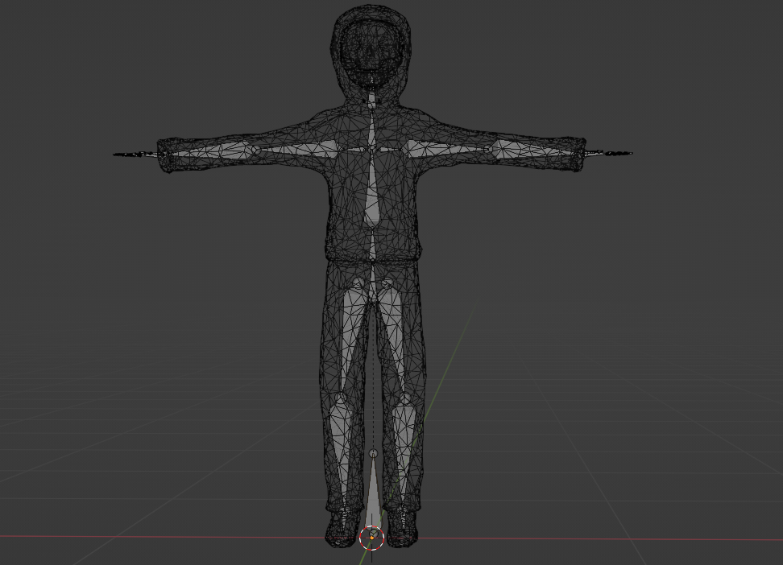

Golden Jaw - Avatar
Published 2023-03-12 by KnarSummary
Near the end of 2021 I made my first custom Avatar using Vroid Studio as part of my [M3 Onboarding]. It's a .vrm avatar which works in many platforms including Hyperfy and Webaverse by having the correct rig and bone setup. This avatar has served me well for over a year but I want to create something from scratch that is more optimized.
Golden Jaw
Before getting into the avatar creation process I need to explain what this is all for. Golden Jaw is my Metaverse Original Character, a skeleton with a jawbone made of gold. Gathering inspiration from the NFT [Loot Project] I picked some simple words to describe my character in an abstract way. Golden Jaw has a Skeleton body, Gold lower jawbone, gold lower teeth, and a black hood. Sometimes these attributes might be missing from an iteration of Golden Jaw but that's fine, they serve as a general guideline. For example Golden Jaw can be a human with skeleton face paint and a gold lower grill. Instead of a black hood he might have a black hat or helmet. Sometimes he might just be a naked skeleton with the golden jaw. It doesn't even have to resemble a skeleton as long as there's some kind of gold adornment on the bottom of the head.

Avatar Specifications
I am optimizing my avatar for use in Hyperfy because that's currently my main metaverse platform. The [Hyperfy documentation] has a page for Avatars which lays out the rules for avatar visibility. In order to get a "Perfect" rated avatar, I need to constrain my model to 16,000 triangles, stay within the bounds of a 3m cube, only have a single mesh, and keep the file size below 5mb.
Modeling
In order to get a general idea of scale within Blender I started by importing my old avatar into the scene. I will start by modeling the head, so I created a UV sphere mesh with 16 segments and placed it slightly above my old avatar's head (I want the new one to be a little taller) and scaled it until it's roughly head sized. I made a duplicate of this sphere and hid it, then deleted the old avatar because I can use this duplicate sphere as a guide for scale now. I went into sculpt mode, enabled symmetry on the X axis, and sculped out a basic shape of a skull.
To make the hood I created another sphere with the same number of segments and made it slightly bigger than my skull. I sculpted it until it resembled a hood hanging on top of the skull. The meshes had a bunch of overlapping segments, so I manually selected the faces and deleted them.
I decided to try something new for the body, so I went into sculpt mode and enabled Dyntopo on my sculpt tool. This subdivides the surface automatically as I sculpt adding new triangles as needed. With this I can quickly scuplt a rough body shape. The downside to this approach is that it adds a lot of extra detail to the model which I will have to decimate and perform re-topology on later. I also sculpted the face using this method to give a roughly skull-like appearance. I didn't worry too much about it because decimation will hide all the weird mistakes. I tried modeling hands but decided to just go without them
After the model looked about right I merged the head and body into a single mesh. Then I applied a decimate modifier to the mesh and tweaked the slider until it was exactly 4k faces. All of my faces are triangles so this should fit within the "Perfect" rating for Hyperfy.
Next I added the VRM armature. I used the Blender VRM plugin to add > Armature > VRM Humanoid to add the standard VRM bones. Then I dragged the bones into the right place in Edit mode until they roughly matched the outline of the mesh. Then I selected the armature, then shift selected the mesh, and using ctrl P I set the armature as the parent of the mesh using automatic weights. I exported as a VRM and imported into hyperfy to test, and everything worked! For some reason there is 4012 triangles so I had to tweak the decimate a little lower. The stance is a bit awkward but that's fine.

Texture
Next I added the texture. I had to create a new material for the mesh, then UV unwrapped it. I let blender figure out the UV unwrapping because I don't really need it to be perfect. I used the Texture Paint mode to paint on black clothes, white skull, and a golden jaw. My method was to roughly paint in colors in the 3d view, then go back and refine in the 2d view. Now the avtar is complete!
After this I tested in hyperfy one last time to check if it still fit the "Perfect" avatar criteria and it did. It might not look great but it was a good learning exercise. If nothing else I learned the value of a good 3d avatar. Now I will leave it to the expert artists to make my avatars for me and return to my life as a programmer.